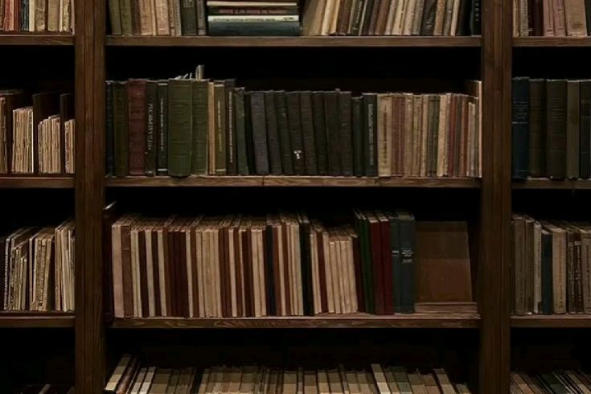

Entrar naquela biblioteca era atravessar um limiar invisível; o mundo exterior ficava do lado de fora no instante em que seus pés tocavam o chão silencioso do lugar. Ali dentro, existiam literalmente centenas de histórias à espera de serem descobertas, narrativas pacientes, guardadas entre estantes distribuídas e organizadas da maneira exata que se esperava de um espaço dedicado ao conhecimento.
Mais do que o zelo pela ordem, o que realmente definia a biblioteca era o silêncio. Um silêncio absoluto, talvez o mais profundo de toda a escola. Mas não se tratava de algo incômodo ou opressor. Pelo contrário: era uma quietude reconfortante, daquelas que desaceleram os pensamentos e acalmam a mente, como se o próprio ambiente pedisse, gentilmente, para que todos respirassem mais devagar.
— Uau.. mas esse lugar dá uma paz, não é? — comentou Ashley, caminhando sem pressa enquanto observava tudo ao redor, os olhos curiosos passeando pelas prateleiras.
— Concordo. — respondeu Jellie, analisando o espaço com mais cautela. — É bem acolhedor, apesar de eu achar que essas estantes deixam tudo meio claustrofóbico demais.
Kenda cruzou os braços, encarando os corredores estreitos com claro desagrado.
— Vocês são estranhas. — decretou. — Isso aqui é apertado pra caramba! Como é que alguém consegue andar direito nesse lugar?
— Ah, para, Kenda! — rebateu Ashley, revirando os olhos. — Nem é tão ruim assim!
— Como eu disse, vocês são esquisitas. — insistiu Kenda, dando de ombros. — E nem preciso elaborar mais. Ô Miska, o que é que tu queria com esse lugar mesmo, hein?
Miska demorou alguns segundos para responder.
Sua atenção estava completamente capturada pela vastidão de títulos, pelas lombadas de cores variadas e pelos nomes de autores que pareciam sussurrar promessas silenciosas. Ela parou, ainda observando ao redor, como se estivesse tentando absorver tudo de uma vez.
— Eu queria alguma literatura francesa. — explicou, por fim. — Já que eu tô estudando língua estrangeira, ler autores renomados pode me ajudar bastante.
Assim que terminou a frase, voltou a se concentrar nas estantes, percorrendo os títulos com os olhos atentos.
— É.. boa sorte com isso. — comentou Kenda, desviando o olhar com total desinteresse.
No entanto, poucos passos depois, algo acabou chamando sua atenção. Em uma das prateleiras, um livro de capa vermelha se destacava entre os demais. A cor vibrante parecia destoar do resto do ambiente, quase chamando por ela. Sem saber exatamente o motivo, Kenda se aproximou e puxou o exemplar, curiosa o suficiente para, ao menos, dar uma olhada.
— Hã.. Divina Comédia? — Kenda inclinou levemente a cabeça, arqueando uma sobrancelha com uma expressão que misturava curiosidade e desconfiança.
— Ahhh! Eles tem Divina Comédia aqui?? — Jellie reagiu quase de imediato, aproximando-se de Kenda para espiar o livro. O brilho nos olhos ao reconhecer o título denunciava um entusiasmo nada discreto.
— É, sim, mas.. sobre o quê é isso, exatamente? — Kenda perguntou, estendendo o exemplar para Jellie, que já começava a folhear as páginas com um cuidado reverente.
— Então — começou ela, animada —, isso aqui conta a jornada de Dante, que, por coincidência nenhuma, é o próprio autor da obra. O cara se perde numa selva sombria, bem no meio de uma crise existencial pesada, e acaba sendo guiado por Virgílio através de três reinos: Inferno, Purgatório e Paraíso. Não é só uma viagem espiritual bonitinha e blá blá. Ele pega a teologia, a política e as tretas pessoais da época e transforma tudo numa espécie de arquitetura matemática do sofrimento humano e da redenção. Inclusive, muita da imagem que a gente tem hoje do Inferno vem basicamente daqui.
Jellie fechou o livro após folhear algumas páginas, como quem já tinha matado a curiosidade inicial.
— Em resumo, Dante escreveu uma fanfic gigantesca de si mesmo, colocou todos os inimigos políticos dele pra sofrer no fogo eterno e ainda se presenteou com um passeio celestial ao lado da mulher por quem era apaixonado. Mas ó, é uma fanfic boa!
Ela riu de leve, satisfeita com a própria definição.
— Hm, saquei. — Kenda coçou a cabeça, pensativa. — Parece interessante. Acho que vou levar. Se for chato, eu arrumo um jeito de fazer a escola me dar dinheiro. Quero nem saber.
— Leva mesmo, tenho quase certeza de que você vai gostar e—
Jellie interrompeu a própria frase ao notar outro livro em uma prateleira próxima. A capa verde-escura se destacava de maneira discreta, mas suficiente para fisgar sua atenção. Não era apenas a cor: havia algo estranhamente familiar naquele volume.
— Espera… — murmurou ela, devolvendo o livro às mãos de Kenda e puxando o outro livro quase por instinto.
Jellie analisou a capa por alguns segundos. Então, como se uma lembrança antiga tivesse acabado de se encaixar no lugar certo, seus olhos se iluminaram. Ela levou a mão à boca, tentando conter o sorriso largo que surgia, claramente empolgada com a descoberta inesperada.
— Woooahh! — Jellie praticamente explodiu de empolgação. — Eles têm O Chamado de Cthulhu aqui! Isso é surreal! — girou sobre os próprios calcanhares, varrendo o ambiente com o olhar, agora elétrico. — Será que também tem alguma coisa de Stephen King?! Porque, se tiver, eu juro que nunca mais reclamo dessa escola!
— Olha… — Ashley começou, já com um livro em cada mão. — Dom Quixote, O Diário de Anne Frank… — alternava o olhar entre as capas, avaliando o peso simbólico de cada uma. — Sinceramente, o estranho seria não ter.
Ashley, então, observou mais à frente. Seu olhar acabou pousando em Miska, que ainda caminhava entre as estantes com passos lentos, como quem vagueia sem um destino claro, distante do entusiasmo coletivo e, ao que tudo indicava, igualmente distante de encontrar o que procurava.
Sem trocar muitas palavras, Ashley, Jellie e Kenda seguiram em direção a ela.
— E aí, criatura? — Ashley puxou assunto, aproximando-se. — Achou alguma coisa que preste?
— Tomara que sim. — Kenda resmungou, cruzando os braços. — Porque esse lugar já tá começando a me dar sono, e o intervalo não vai durar pra sempre.
Miska parou. Fitou uma estante à esquerda por alguns segundos, avaliando uma possibilidade que não a convencia. Em seguida, abaixou a cabeça e soltou um suspiro contido.
— Não. — respondeu. — Até agora, nada que realmente chame a atenção.
Ela então puxou um livro qualquer da prateleira, mais por impulso do que por interesse, e passou a encarar a capa com uma expressão indiferente.
— Talvez eu só não esteja procurando do jeito certo e—
Miska estreitou os olhos, como se algo finalmente tivesse se encaixado.
— Calma aí. — murmurou.
Miska abriu o livro com cuidado e começou a folheá-lo, agora com uma atenção minuciosa.
Ashley se aproximou pelo lado direito, incapaz de conter a curiosidade.
— O que foi? — perguntou, inclinando-se levemente. — Achou alguma coisa?
Miska não respondeu de imediato. Continuou virando as páginas, o ritmo acelerando aos poucos, enquanto uma animação discreta tomava conta de seus gestos. Quando enfim fechou o livro, seus olhos brilhavam de um jeito raro, parecendo ter acabado de resgatar, do fundo da memória, algo valioso.
— Le Petit Prince. — Miska pronunciou, automática, em um francês impecável, enquanto segurava o livro com um cuidado que ia além do mero zelo físico, um respeito silencioso imposto pelo próprio objeto.
Kenda e Jellie arquearam as sobrancelhas ao mesmo tempo. Ashley, por sua vez, apenas piscou, visivelmente confusa.
— Fala a nossa língua, mulher. — Kenda comentou, arrancando uma risada baixa e cúmplice de Jellie.
A atenção de Miska se desprendeu do livro num sobressalto leve. Ela ergueu o olhar para as duas, como quem acabara de voltar ao mundo real.
— Ah, foi mal… — disse, ajeitando a postura. — É que eu achei o livro de "O Pequeno Príncipe". — Levantou o exemplar para que ambas pudessem ver melhor.
Jellie inclinou a cabeça, interessada de imediato. Kenda, no entanto, não conseguiu acompanhar o entusiasmo.
— Caaaaaraaaa, O Pequeno Príncipe é maravilhoso! — Jellie exclamou, cruzando os braços com um sorriso aberto.
— Credo. — Kenda fez uma careta nada impressionada. — Isso aí não é livro pra criança, não?
Jellie virou o rosto na mesma hora, a expressão de quem acabara de ouvir uma heresia literária.
— O Pequeno Príncipe é literalmente um pilar da literatura francesa e da identidade cultural do país, Kenda! — começou, já empolgada. — Não é à toa que é um dos livros franceses mais lidos e influentes do mundo inteiro. Eu li quando tinha uns quatorze anos, faz um tempo, mas lembro direitinho: é sensível e profundamente lindo! Eu recomendo!
Enquanto Jellie discursava, Ashley voltou seu olhar para Miska, ainda intrigada.
— Tá… — disse, arrastando a palavra. — Mas por que esse livro em específico?
Miska respirou fundo antes de responder, tentando organizar as lembranças antigas.
— É que, Quando eu tinha uns dez anos… — começou, com cautela. — Minha mãe costumava me contar histórias antes de eu dormir. — Fez uma pausa breve, buscando precisão nas próprias memórias.
— Awn, que neném! — Kenda provocou, com um meio sorriso.
Mas a frase morreu antes de ganhar fôlego.
Kenda percebeu o olhar de Ashley. Não era brincalhão, nem distraído, era sério, denso e duro. Ashley não precisou dizer absolutamente nada; seus olhos deixavam claro que aquele não era o momento para piadas.
Jellie também captou a mudança no clima. O ar parecia mais pesado, menos leve do que segundos antes. Sensata, decidiu não acrescentar nenhum comentário fora de lugar. O silêncio que se seguiu, dessa vez, não era desconfortável, era respeitoso.
Miska ignorou completamente a provocação e seguiu falando, com a tranquilidade de quem já estava acostumada a esse tipo de comentário.
— E não, eu não era aquela criança que precisava de historinha pra conseguir dormir — esclareceu. — Na maioria das vezes, eu só pegava meus ursinhos, me enfiava debaixo das cobertas e dormia abraçada com eles mesmo. Mas nem sempre funcionava. Tinha noites em que o sono simplesmente se recusava a vir. E era justamente nessas horas que minha mãe entrava em cena. Ela sentava ao meu lado e começava a ler alguma coisa, sempre do jeito dela.. e, sem exceção, dava certo.
— Ohh, isso é fofo demais, Miska! — Jellie comentou, visivelmente tocada. — Lembra muito quando meu pai fazia algo parecido. A diferença é que eu pedia três histórias seguidas, e às vezes quem apagava primeiro era ele. — completou, rindo.
A lembrança arrancou risadas suaves das quatro, quebrando por um instante o clima mais denso. Miska se recompôs rápido e voltou o olhar para o livro, passando os dedos pela capa, reconectando o passado e presente.
— Mas, enfim. — retomou. — Teve uma dessas noites em que minha mãe leu O Pequeno Príncipe pra mim. E se seguiu como sempre: Eu fiquei completamente presa naquilo, na narrativa, nas imagens, no jeito como ela contava, tudo até eventualmente pegar no sono e apagar de vez. A voz dela deixava tudo ainda mais bonito. — Miska suspirou de leve e afastou o olhar do livro por um momento. — Só que meu carinho por essa obra vai muito além disso.
Ela fez uma breve pausa, como quem escolhe bem as palavras.
— Antes de começar a leitura, minha mãe repetiu o título em francês. Eu não entendi nada na hora, eu era criança, achei o som das palavras engraçado. Mas aí ela me explicou que estava falando francês, contou que o pai dela era francês, que já tinha viajado pra França pra conhecer o país e aprender a língua de verdade.
Jellie escutava em silêncio, sem interromper, apenas absorvendo cada detalhe.
Ashley, por sua vez, não disse uma única palavra desde o início da explicação. Para ela, ouvir Miska falar da mãe sempre carregava um peso silencioso e dolorido, um tipo de tristeza delicada demais para ser quebrada com humor ou comentários leves. Era o tipo de assunto que pedia respeito, e Ashley sabia disso melhor do que ninguém.
— Hm… — Kenda murmurou, levando a mão ao queixo, claramente perdida em pensamentos que só diziam respeito a ela. Talvez estivesse apenas tentando achar uma forma de romper aquele silêncio incômodo que se instalara no ar. — E aí? Tem mais coisa?
— Ela me prometeu que.. ia me levar pra Paris. — respondeu Miska, com um peso evidente na voz. O olhar dela escureceu por um instante, denunciando o impacto profundo daquela memória. — Mas, infelizmente, isso não pôde acontecer porque… vocês sabem.
— Sim, não precisa entrar nisso. — Jellie interveio de imediato, erguendo a mão num gesto contido, quase solene, deixando claro que entendia.
— É. — Miska murmurou, enquanto devolvia o livro com cuidado à prateleira. — Mesmo assim, eu ainda sonho em ir pra Paris um dia. É um sonho de criança, sabe? Por isso eu estudo francês, a cultura, a história, minha mãe ia gostar de me ver lá.. não é?
Ashley se aproximou e pousou a mão no ombro de Miska, fazendo com que ela se virasse por um segundo.
— Tenho certeza de que sim. — disse Ashley, com um sorriso forçado, frágil, mas genuíno o suficiente para transmitir acolhimento.
— Nossa, esse clima ficou meio pesado, né? — Kenda comentou, coçando a cabeça, visivelmente desconfortável com a carga emocional do momento.
O sino soou novamente, ecoando pela biblioteca. O intervalo havia terminado; era hora de voltar para as salas.
— Meh, no fim, eu não consegui encontrar nenhum livro. — Miska comentou, dando de ombros, com um quê de frustração na expressão.
— Ei, nem começa com essa cara! — Kenda disparou, estalando os dedos para chamar a atenção dela. — Relaxa. Essa biblioteca não vai sair andando por aí. Você tem tempo de sobra! Uma hora você acha algo, sempre acha. Você é boa nisso, Miska.
Ela disse aquilo tentando, de alguma forma, elevar o ânimo de Miska, que seguia visivelmente afetada pela lembrança recém-desenterrada. Miska soltou um suspiro curto e respondeu apenas com um sorriso discreto, daqueles que mais disfarçam do que confortam.
— É, você tá certa — concordou, em tom baixo e tímido. — Eu vou voltar pra aula. Vejo vocês na saída. Tchau, gente.
Kenda e Jellie se despediram com um “tchau” e um “se cuida” ditos de maneira leve. Ashley, por sua vez, permaneceu em silêncio, limitando-se a um gesto contido com a mão, uma despedida pequena, mas carregada de intenção.
Miska deixou a biblioteca e seguiu pelo corredor em direção à própria sala, afastando-se das amigas e levando consigo o peso da conversa. Atrás dela, o ambiente silencioso permanecia intacto, embora já não fosse possível dizer se aquele silêncio ainda tinha o mesmo caráter reconfortante de antes.
← Basquete Encrenca →